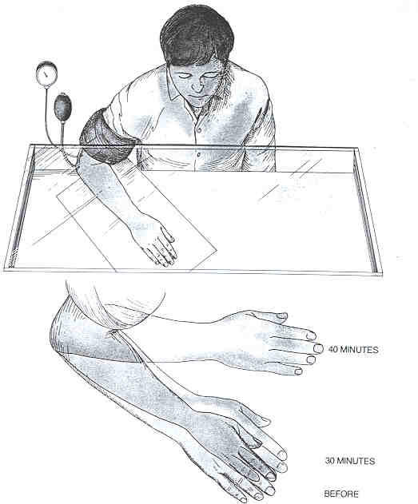

Back to Franz Bardon Research
A Bardon technique confirmed by modern science.
You can, without any training, yourself verify safely an advanced method described by Bardon.
©
Paul
Allen, July, 12, 2002 (Version 2)
Franz
Bardon Research (English)
Franz
Bardon Forschung (deutsch)
"Ordinary" people (i.e. those not inclined versus the occult), when confronted with Bardons works in most cases will tell you that "it's all an invention", silly and not reliable. Putting aside, that a small number of "altered states of consciousness" are accepted by science today like hypnosis, lucid dreaming, catalepsy and a few others, most of Bardons descriptions would be rejected by most of today's scientists.
Though, there exists one further proof, that Bardons system is not only "thought out", a product of fantasy, but may indeed be a large compilation of methods to acquire "exotic abilities" which are not yet well understood by modern science.
In the following I will describe the findings of a number of scientists, which confirm that an advanced technique described by Bardon in his first book is indeed a reliable and trustworthy one.
The creation of a "mentally vacant space".
Franz Bardon describes in his basic course, Initiation into Hermetics, in step V, "Magical schooling of the body", a method that "makes conscious passive communications with the invisible possible" (page 148 f, Merkur Edition). For that purpose one must, to get ready, do preparatory "levitation"-exercises. To that end one "loads" his hand with "vital power" and then with the "element of air". When the student is able to do this he proceeds to the next step where he must learn to create a "mentally vacant space" in his hand and arm. That means that he must extract his "mental hand" which is part of his "mental body" on the "mental plane" from his physical counterpart and he must place this "mental" hand and arm beside the physical hand or he lets it glide through the table to rest on his knee. Bardon continues: "You must consider the imagined spirit hand to be your real hand. As a result of this, a mentally vacant space develops within the physical hand which has the form of the external hand."
Many scientists and most people would regard such descriptions as really beyond belief and far-fetched and can not understand how some people can be so naive to consider such gibberish as reliable possibilities. But even a student of Bardons works who was able to master some of Bardons techniques might have possibly a hard time when he thinks about the task that he himself must be able to do exactly as Bardon claims.
Therefore it may be very surprising for most readers of this article, that indeed this very method can be proven immediately by everyone without the need of any "magical" training. But if you are really able to contact "spirits" or "deceased souls" with this method, you must find out for yourself. Bardons methods are, or at least, this method described by Bardon is, not merely a thought out invention but is based on true possibilities.
Phantom limbs, today's state of research.
In order that the reader can get a clear picture of how the following method works we must talk at first a bit about phantom limbs: therefore I will report here briefly a summary of today's state of research in phantom limbs.
When a person loses one of his limbs due to amputation, in an accident, etc., then very often he will feel sharp pains in those regions, where the limb has been removed. This is a strange fact: how can it be, that someone feels pain in a part of the body where actually nothing material is present?
This phenomenon was first described in 1866 by S. Weir Mitchel, the foremost American neurologist of his time, in his first account of phantom limbs. He reports the case of a man who loses at first one of his arms and then both his legs too, unbeknownst to him, to amputation in the hospital during the Civil War.
"I was suddenly aware of a sharp cramp in my left leg. I tried to get at it with my single arm, but finding myself too weak, hailed an attendant. «Just rub my left calf, if you please.» «Calf? You ain't got none, pardner. It's took off.»"
Ronald Melzack points out in his article "Phantom limbs" (Scientific American, April 1992), that: "In fact, the phenomenon of phantom limbs is common. So is the occurrence of terrible pain in these invisible appendages." And he continues: "The most extraordinary feature of phantoms is their reality to the amputee. Their vivid sensory qualities and precise location in space especially at first make the limbs feel so lifelike that a patient may try to step off a bed onto a phantom foot or lift a cup with a phantom hand. The phantom, in fact, may seem more substantial than an actual limb ...". And: "The reality of the phantom is also enhanced by wearing an artificial arm or leg; the phantom usually fills the prothesis as a hand fits a glove."
Well known is the old assumption, that the sensations of phantom limbs are generated by the remaining nerves in the stump that continue to generate impulses which then are interpreted by the brain as coming from the associated parts in the body. The brain assumes that an input from a (obviously removed) part of the body has been received and generates the false impression of the phantom limb. This explanation is now outdated due to research of the last decades. In order to cure the intolerable pain the relevant nerves have been cut within the spinal cord and even the areas of the thalamus and cortex which receive sensory information from these areas have been removed to no avail. None of these measures removes the phantom limb.
"Any explanation must account for the rich variety of sensations a person can feel, the intense reality of the phantom ... " Melzack explains, "The sense of reality is also strengthened by the wide range of sensations a phantom limb can have. Pressure, warmth, cold ..." "A phantom can feel wet (as when an artificial foot is seen stepping into a puddle)." And he continues: "A final striking feature of phantoms which reinforces the reality still further, is that they are experienced as a part of oneself. That is, patients perceive them as integral part of the body. A phantom foot is described not only as real but as unquestionably belonging to that person."
Melzack proposes such a model, which accounts for the mentioned features of phantom limbs and he says about his model: "..., but it must, of course, be tested more fully before its value can be assessed completely." Basically he postulates in his model, that the brain contains a neuromatrix = a network of neurons, that model artificially the entire body in accordance with the incoming sensory data. He calls this neuromatrix, this pattern "the neurosignature". Melzack describes different layers or systems which this neurosignature must contain and the relevant parts of the CNS (central nervous system) which account for it. Please read the original paper for further details. He states also, that when some areas of the brain that are important for this neurosignature, are damaged then it happens that patients may "push one of their own legs out of a hospital bed, because they were convinced it belonged to a stranger."
The important point is, in my opinion, Melzacks assumption that this body scheme represented by the neuromatrix is working on its own but is constantly "updated" by the sensory inputs which come from the diverse parts of our body. Therefore, if we cut the input from the sensory apparatus down in some way then this neural network which processes these signals will take over and will create the impression of a separate body besides the "real, material" body. Therefore we can speak about two systems:
1. Our body and the sensory systems which connect us to the "real (=outside) world", and
2. The artificial body scheme generated in the brain by the neuromatrix = neurosignature.In an analogy to the computer sciences we may say that this body scheme, this network of neurons, is like a software program which "runs" independently from the hardware peripherals. An image can be generated by the peripherals like e.g. a scanner, a digital camera, it can be loaded from the internet, etc. and then processed by a program like Adobes Photoshop, but on the other hand you need no signal from the periphery, you can use your paint program to create a complete new picture on its own.
As long as we live an "ordinary" life and nothing special happens, the difference between these two working systems gets by unnoticed. Only if the first system gets separated from the second one by any means, the autonomous working of the second one becomes apparent.
This is for example the case, as we have seen above, when the nerve fiber connection between the periphery and the central nervous system (CNS, brain) is disconnected. But this is only one possibility: the nerves can be ruptured by a trauma (e.g. a tennis incident with a muscle/nerve rupture), or they can be damaged by a virus as it happens with polio, or they can get paralyzed by a local anesthesia. Of course the ultimate possibility is the case when the nerves of a certain region of the body have never existed.
The scientists dispute how this neuromatrix forms. Melzack writes: "I depart from Hebb, however, in that I visualize the neuromatrix as an assembly whose connections are primarily determined not by experience but by the genes." and "I think the matrix is largely prewired, for the simple reason that my colleagues and I have encountered many people who were born without an arm or a leg and yet experience a vivid phantom. For example, an intelligent and serious eight-year-old boy, who was born with paralyzed legs and a right arm that ends at the elbow, tells us that when he fits his elbow into a small cup so as to manipulate a lever that allows him to move his wheelchair, phantom fingers, "like everyone else's fingers", emerge from his elbow and grasp the edges of the cup."
Surgeons who operate people that are treated only with local anesthesia reported repeatedly the frequent complaint of patients, that something strange was going on with their hand or arm. The surgeon, after the administration of the local anesthesia operates the hand or arm which is concealed behind a small screen to protect the patient from disturbing pictures of blood, sores and the surgeons instruments. After a wile some patients complain or express their concern that even they can feel no pain it seems that their arm/hand has moved and how it might be possible to operate in such a condition when the arm has assumed such a strange position in middle air. The surgeon must then calm down the patient stating that all goes well, that the hand has not moved and that it's all only a subjective "impression" of the patient.
In reality the virtual arm of the body scheme begins to work on its own and the patient has the impression of strange movements of his arm behind the protecting screen which prevents that the patient can see the true position of his arm.
The "hand-exteriorization"-technique.
(About safety considerations please read Simon K's very good submission to the Museum, [and my repy to it].)
Of course, we can not use any local anesthetics, those are reserved for the experienced medical practitioners.
The experts have devised a very simple but effective method, to facilitate experiments with virtual limbs.
All you need is an ordinary apparatus which is used to measure the blood pressure. From this apparatus you need only the pressure cuff facility. You surely already know those pressure cuff-manchettes which your doctor or your nurse puts around your upper arm, when he's about to measure your blood pressure. They will pump air into this manchette which forms a tight ring around your arm preventing the blood from circulating in your arm veins. (Of course, only the main blood-vessels are blocked, there remains enough circulation in the smaller vessels, that almost normal functioning and supply of oxygen to the arm tissues is possible). By this means you prevent the nerves to function properly and the hand and arm gets numb i.e. the nerve impulses are blocked temporarily from reaching your central nervous system (brain). When the pressure-cuff is removed complete normal functioning of the nerve-fibers is restored.
Sit at a table, put the arm on it, apply the pressure cuff to you upper arm and inflate it. It is necessary to cover your arm with something to "prevent your brain" from calculating the position of your arm by the visual input; in other words: you should not be able to see what the exact position of your arm is. You can accomplish this by covering the table with a black cloth. (See picture):

You can see in this picture, how the virtual limb begins to "exteriorize" from the "real" arm. After 30 minutes the virtual arm begins to move a bit, 10 minutes later its position is moved away quite a lot from its original position.
After some practice with this method it is no more necessary to cover your arm. As soon as your hand and arm gets numb you will be able to move your virtual hand and arm freely around. You can let it glide "through the table", you can grab your ("real") nose and do all kind of funny experiments. What about to enter your "real" body with your "virtual hand". Is this possible for you ? Can you "feel" your inner body segments? (Remember Polynesian healers when they claim that they operate you and enter your body to remove the evil spirit of your ailment ...). Are you able to trick your virtual hand ? Can you feel the wetness of water in a drinking glass or not? Can you reduce or expand the size of your hand and arm? Can you remember the "feeling" of extracting your virtual limb and do the same without the aid of the pressure cuff ? With practice you will be able to extract your entire virtual body from his actual counterpart.
You see: What we learn by Bardons method is not to reach the "astral plane" but to control our own body image neuronal network.
You may say, that's the same thing explained with a new terminology. I disagree ! Because I'm not satisfied with the implications of the old (and I think outdated) notion of the astral (and mental) plane.
Melzack, Ronald (1992): "Phantom Limbs". Scientific American, April 1992.
Y. Gross and R. Melzack (1978): "Body Image: Dissociation of Real and Perceived Limbs by Pressure-Cuff Ischemia". Experimental Neurology, Vol. 61, No. 3, p 680-688; 15. September 1978.
R. Melzack (1989): "Phantom Limbs, The Self and The Brain: The D.O. Hebb Memorial Lecture." Canadian Psychology, Vol 30, No. 1, p. 1-16; January 1989.
J. Katz and R. Melzack (1990): "Pain Memories in Phantom Limbs: Review and Clinical Observations." Pain, Vol. 43, No. 3, p. 319-336; December 1990.
R. Melzack and P.R. Bromage (1973): "Experimental phantom limbs." Experimental Neurology, 39, p. 261-269; 1973.

This page hosted
by  Get your own Free Home Page
Get your own Free Home Page